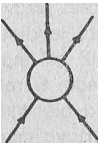

Parçacıklar dünyasındaki simetrileri dinamik bir modelle (yani, parçacıklar arasındaki etkileşimlerle) açıklamak, günümüz fiziğinin en önemli meydan okuyuşlarından biridir. Aslında sorun, Kuantum kuramı ile zafiyet kuramını aynı anda nasıl göz önünde bulundurabileceğimiz muamması ile ilgilidir. Örneğin parçacık kalıpları, parçacıkların sahip oldukları «Kuantum doğalarını» yansıtır gibi görünmektedirler (bunlara benzer kalıplara, atom dünyasında da rastlanmaktadır) Ancak parçacık fiziğinde bunlar Kuantum çerçevesi dahilinde hareket eden dalgasal kalıplar olarak açıklanamamaktadırlar, çünkü burada gömülen enerji miktarları o kadar büyüktür ki, artık izafiyet kuramının kullanımı bir zorunluluk haline gelinmektedir. Gözlemlenen simetrileri açıklamaya ancak ,parçacıklar için geliştirilen bir «Kuantum-izafiyet» kuramı yetkili olabilecektir.
Kuantum Alan Kuramı, böyle bir modelin ilk türü sayılabilir. Ancak bu kuram, elektronlar ve fotonlar arasında cereyan eden elektromanyetik etkileşimleri mükemmel bir biçimde açıklamasına rağmen, şiddetli etkileşim gösteren parçacıkların davranışlarına hiç de tatmin edici bir cevap bulamamaktadır. Parçacıkların sayısı arttıkça, fizikçiler, bunların her birini temel bir alan ile bağdaştırmanın hiç de iyi olmadığını görmüşlerdi. Parçacık dünyasının birbirleri ile etkileşen çok karmaşık bir doku halinde var olduğunun anlaşılması ile dinamik ve sürekli olarak değişen gerçekliği temsil edebilecek yeni modeller de aranmaya başlandı. Gerekli olan şey, çok şiddetli hadron kalıplarını dinamik bir biçimde açıklayabilecek bir formalizm idi. Burada, hadronların sürekli olarak değişim göstermeleri, parçacık değiş-tokuşu ile karşılıklı bir etkileşimde bulunmaları, iki ya da daha çok hadronların «birleşik durumlar» oluşturmaları ve daha sonra çeşitli parçacık kombinasyonları oluşturacak biçimde bozunmaları dikkate alınmalıydı. Genelde hepsine birden «parçacık tepkileri» denilen söz konusu süreçlerin tümü de, şiddetli etkileşimlerin en temel özettiklerini oluşturdukları için, hadronlarla ilgili bir Kuantum-izafiyet modeli mutlaka göz önünde tutulmalıydı.
Hadronların ve etkileşimlerinin açıklanması yönünde en uygun çerçeveyi, «S-matriks kuramı» oluşturur. Bu kuramın özünü oluşturan «S-matriks» kavramı 1943 yılında Heisenberg tarafından ortaya atılmış ve o tarihten bu yana şiddetli etkileşimleri açıklayabilen çok uygun ve karmaşık bir matematiksel yapıya dönüştürülmüştür. Aslında S matriksi hadronların dahil oldukları tüm tepki olasılıklarının bir toplamıdır ve ismi de şu şekilde ortaya çıkmıştır: Olası tüm hadron tepkileri, matematiksel deyimi ile sonsuz bir matriks biçiminde düşünülebilir. Bu nedenle de, kurama «matriks» ismi verilmiştir. Başlangıçta kullanılan «S» harfi ise, kuramın orijinal isminin (yani, «scattering matrix»in) kısaltılmış bir şeklidir. Burada parçacık tepkilerinin en önemli unsurlarını oluşturan çarpışma (yani, «scattering») süreçlerine bir atıfta bulunulmaktadır.
Tabii pratikte hiç bir zaman tüm hadron süreçlerinin toplamı dikkate alınamamakta, daha çok, bazı özel ve az sayıda tepkilere odaklanılmaktadır.
Bunlar ise görülen şekildeki gibi diyagramlarla izah edilmektedirler. Örneğin bu diyagram, mümkün olan en basit ve en genel parçacık tepkilerinden birini göstermektedir: A ve B türünden iki parçacık bir çarpışma sonucu C ve D türünden iki değişik parçacığa dönüşmektedir. Bundan daha karmaşık süreçler, daha çok parçacığı kapsamakta ve aşağıdakilere benzer diyagramlarla ifade edilmektedir.

Ancak hemen şunu vurgulamakta yarar vardır: Sözü edilen S matriks diyagramları, alan kuramında görülen Feynman diyagramlarından çok farklıdır. Örneğin bunlar, parçacık tepkilerinin detaylı mekanizmalarını göstermekten çok yalnızca başlangıçtaki ve sonuçtaki parçacıkları ortaya koymaktadırlar. Örneğin A + B → C + D benzeri bir standart süreç, alan kuramında «sezilgen bir V parçacığının değiş-tokuşu olarak gösterilmesine rağmen, S matriks kuramında bu sürecin tümü, basit bir daire ile ifade edilmekte ve dairenin içindeki hiç bir detay belirtilmemektedir.
Ayrıca S matriks diyagramları, uzay-zaman diyagramlarından da farklıdır. Çünkü bunlar, parçacık tepkilerinin genel ve simgesel temsillerinden başka bir şey değildirler. Söz konusu tepkilerin kesin uzay ve zaman noktalarında oluşmaları da gerekmez, Bunlar yalnızca gelen ve giden parçacıkların hızları ile (ya da daha kesin olmak gerekirse, momentleri ile) ifade edilmektedirler.
Bunum anlamı da tabii ki, S matriks diyagramlarınım, Feynman diyagramlarından çok daha az bilgi içermesidir. Ama öte yandan S matriks kuramı yardımı ile alan kuramında görülen karakteristik zorluklar ortadan kaldırabilmektedir. Çünkü Kuantum ve izafiyet kuramının birleştirilmiş etkileri sayesindedir ki, belirli parçacıklar arasında gerçekleşen etkileşimler tam1 olarak belirlenebilir. Belirsizlik ilkesine bağlı olarak, bir parçacığın etkileşim bölgesi kesinleştirildiği ölçüde, hız belirsizliği artacağından, sahip olduğu kinetik enerji miktarı da gittikçe belirsizleşecektir. Bazı durumlarda bu enerji, yeni parçacıkların oluşmaları için yeterli büyüklükte olacak ve izafiyet kuramına uygun bir biçimde, artık gözlemci orijinal tepki ile uğraşıp uğraşmadığına tam olarak karar veremeyecektir. Bundan dolayı, Kuantum ve izafiyet kuramını birleştiren bir sistemde parçacıkların ayrı ayrı konumlarını kesin olarak belirlememiz imkânsız olacaktır. Eğer buna rağmen böyle bir girişimde bulunursak (örneğin alan kuramında olduğu gibi), bir takım matematiksel düzensizliklerle karşılaşırız. Bunlar da tüm Kuantum Alan Kuramlarının en önemli sorunlarıdır. Ancak S matriks kuramı, bu sorunu pas geçer. Ve parçacıkların momentlerini belirsiz tutarak, tepkinin oluştuğu bölgenin tam olarak belirlenmemesine özen gösterir.
S matriks kuramının en önemli yeni yönü, dikkatleri nesnelerden olaylara doğru kaydırmış olmasıdır. Çünkü bu kuramın temel kaygısını parçacıklar değil, parçacıkların tepkileri oluşturmaktadır. Nesnelerden olaylara yapılan bu geçiş sırasında, Kuantum ve izafiyet kuramlarına önemli görevler düşmektedir. Bilindiği gibi Kuantum 'kuramı, atom-altı parçacıkların ancak çeşitli ölçme süreçleri sırasında ortaya çıktıklarını göstermiştir. Yani parçacıklar, yalıtılmış birer nesne olarak değil, kendilerini diğer olaylarla belirli biçimlerde ilişkilendiren, fenomenler ya da varoluşlar olarak değerlendirilmelidir. Heisenberg bu konuda şunları yazmıştır:
«Modern fizikte; dünya, farklı nesneler guruplarına değil, farklı bağlantılar guruplarına ayrılmışlardır. Artık ayrıştırabileceğimiz tek şey, bazı fenomenler için çok önemli olan bağlantı türleridir. Yani dünya, birleşik bir olaylar dokusu gibi bel irmektedir. Bu dünyada farklı türdeki bağlantılar sürekli olarak değişmekte, birbirlerine geçmekte ya da birleşmekte ve böylece «bütünün» özelliklerini belirlemektedirler» (1).
İzafiyet kuramı ise bize, parçacıkları uzay-zaman olarak algılamamızı öğretmiştir. Burada artık her şey dört boyutlu kalıplar olarak görülmekte ve nesneler de, süreçler olarak ifade bulmaktadır. S matriks yaklaşımı. bu görüşleri bünyesinde toplayıp birleştirmektedir. izafiyet kuramının dört boyutlu matematiksel formalizmi kullanılarak hadronların tüm özellikleri, «tepki» (ya da daha kesin olmak gerekirse, «tepki olasılıkları») şeklinde açıklanmakta ve böylece oluşan süreçler arasında da belirli bağlantılar ortaya konmaktadır. Her tepki, başka tepkileri birbirlerine bağlayan parçacıkları kapsamakta ve bunun sonucu olarak da, büyük bir süreçler ağı ortaya çıkmaktadır.
Örneğin bir nötron, farklı parçacıklar içeren ve peş peşe gelen iki tepkiye katılmış olsun. Bunlardan ilkini bir proton ve bir π- olarak, ikincisini ise bir ∑- ve bir K+ olarak düşünelim. Yani burada nötron bu iki tepkiyi bağlantılamakta ve onların daha kapsamlı ve büyük çaplı bir süreç haline dönüşmesini sağlamaktadır (aşağıdaki diyagram (a)'ya bakınız). Başlangıçtaki ve sondaki parçacıkların hepsi de, diğer tepkilerin unsurları haline gelebilmektedirler. Örneğin buradaki proton, bir K+ ve bir Λ etkileşimin ortaya çıkardığı bir parçacık olabilmekte (diyagram (b)'ye bakınız); başlangıçtaki tepkide görülen K+ ise, bir K- ve bir π° ile ilintilenmiş ve π- de, üç tane başka piona bağlanmış olabilmektedir.
Başlangıçtaki nötron, bütünsel bir etkileşim ağının bir unsuru gibi gözükmektedir. Bu «olaylar dokusunun» hepsi de, S matriks yardımı ile açıklanabilmektedir.